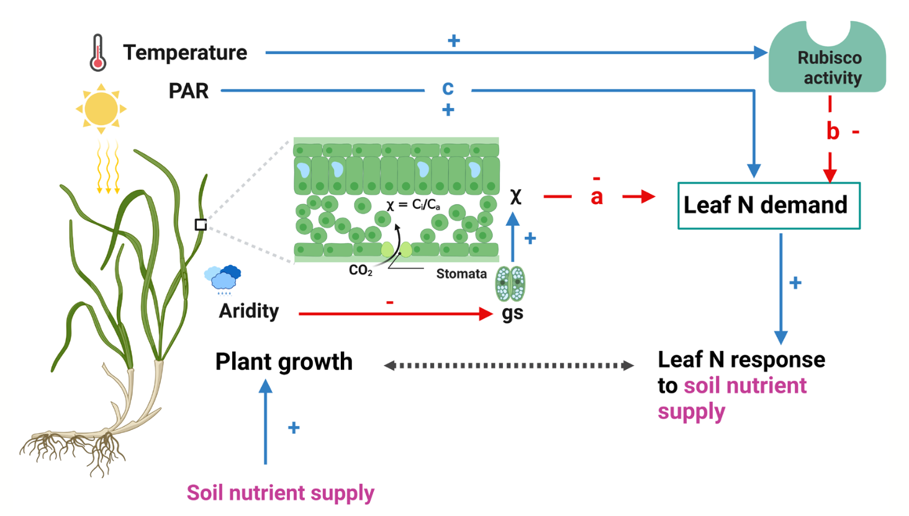
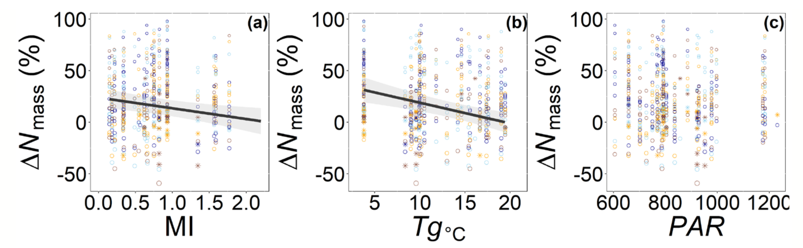

Jan. 19, 2025: Alissar, Lizz, Evan, and Risa lead paper
showing that leaf nitrogen demand helps determine leaf nitrogen responses to soil nitrogen,
out now in Ecology Letters
Alissar led a
new study published in Ecology Letters titled “Soil nitrogen supply
exerts largest influence on leaf nitrogen in environments
with the greatest leaf nitrogen demand."

Figure 1 from the paper. This conceptual illustration depicts how climatic factors
influence leaf nitrogen demand and responses to soil nitrogen supply. increased
aridity reduces stomatal conductance, decreasing CO2 levels and increasing leaf
nitrogen demand through rubisco upregulation. lower temperatures and higher incoming
radiation further enhance leaf nitrogen demand, impacting overall plant growth and biomass.
The paper uses leaf chemistry data
(
Firn et al., 2019)
from the
Nutrient Network
to show that sites that have the greatest leaf nitrogen response to soil nitrogen
fertilization are those where we would expect there to be the greatest demand for photosynthetic leaf
nitrogen.
From theory (see review by
Stocker et al. (2024))
we can predict how climatic factors should drive photosynthetic leaf nitrogen demand.
This theory predicts that leaf nitrogen demand should increase with aridity and sunlight,
and decrease with temperature. The new paper shows that the responsiveness of leaf nitrogen
to soil nitrogen across the network increases with these factors (see figure below).
This study provides a novel confirmation of our theoretical understanding of plant nitrogen
dynamics. This can serve as a baseline for developing new models
(e.g.,
Stocker et al. (2024))
for simulating these responses, ultimately improving simulations of terrestrial carbon-nitrogen cycle
interactions.
As an aside, it is with pleasure to note that this paper was the result of many years of
work by the PhUnFETTy lab and our collaborators within the NutNet. The first four authors are current
or former PhUnFETTy lab members, all of whom contributed significant effort towards
the analyses in this paper. Although, a huge shout out goes to Alissar for bringing
many years of thinking together to craft a cohesive suite of analyses and resulting narrative.
This work was primarily supported by the National Science Foundation.
Cheaib, AC*, EF Waring*, RM McNellis*, EA Perkowski*, JP Martina, EW Seabloom,
ET Borer, PA Wilfahrt, N Dong, IC Prentice, IJ Wright, SA Power, EK Hersch-Green,
AC Risch, M Caldeira, C Nogueira, QQ Chen, and NG Smith (2025).
Soil nitrogen supply exerts largest influence on leaf nitrogen in environments
with the greatest leaf nitrogen demand.
Ecology Letters 28(1): e70015.
link.

Figure 4 from the paper. Caption: Scatter plots depicting the relationship between
(a) ΔNmass and global moisture index (MI), (b) between ΔNmass and growing season
temperature (Tg), and (c) between ΔNmass and photosynthetically active radiation (PAR).